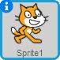

Uvod
Zajedno ćemo napraviti igru u kojoj mačak Felix ganja miša Herberta. Ti češ kontrolirati Herberta sa tvojim kompjuter mišem i pokušati da izbjegneš Felixa. Što duže uspiješ da izbjegneš Felixa to ćeš više bodova dobiti. Ali pazi, gubiš bodove kad te Felix uhvati.

Korak 1: Felix ganja kompjuter miša
Spisak
-
Započni novi projekt.
-
Pritisni na
iu kutu od  i nazovi figuruFelix. -
Stavi «stil rotiranja» da bude
 . Felix če se onda
kretati samo lijevo i desno.
. Felix če se onda
kretati samo lijevo i desno. -
Pritisni na pozornicu
 lijevo od
Felixa. Izaberi pozadinu i zatim pritisni OK.
lijevo od
Felixa. Izaberi pozadinu i zatim pritisni OK. -
Pritisni na Felixa, odaberi karticu
Skriptei programiraj program ispod:kada je ⚑ kliknut ponavljaj okreni se k [strelice misa v] idi (10) koraka sljedeći kostim bubnjaj po (3 v) (0.25) puta end
Probaj program
Pritisni zelenu zastavu.
-
Prati li Felix tvog kompjuter miša?
-
Izgledali da Felix hoda kada se kreče?
-
Kreče li se Felix u točnoj brzini?
-
Pritisni crveni stop simbol da zaustaviš program.
Spasi projekt
Scratch spašava sve tvoje projekte automatski. Ali je ipak mudro da po nekad spasiš tvoj projekt.
- Pritisni
DatotekaiSpremi.
Korak 2: Felix ganja Herberta
Želimo da Felix slijedi Herberta umjesto kompjuter miša.
Spisak
-
Dodaj novu figuru, pritisni
 iznad Felixa. Izaberi kategoriju
iznad Felixa. Izaberi kategoriju ŽivotinjeiMouse1(miš). Pritisni OK. -
Nazovi novu figuru
Herbert. -
Smanji Herberta tako da bude manji od Felixa. Pritisni
 na vrhu stranice 6 puta.
na vrhu stranice 6 puta. -
Pritisni na Herberta, odaberi karticu
Skriptei programiraj program ispod:kada je ⚑ kliknut ponavljaj idi do [strelice misa v] okreni se k [Felix v] end
Probaj program
Pritisni zelenu zastavu.
-
Kreče li se Herbert zajedno sa kompjuter mišem?
-
Ganja li Felix Herberta?
Korak 3: Felix nam treba javiti da je uhvatio Herberta
Spisak
-
Promjeni
Skripteod Felixa tako da bude isti kao program ispod:kada je ⚑ kliknut ponavljaj okreni se k [strelice misa v] idi (10) koraka sljedeći kostim bubnjaj po (3 v) (0.25) puta ako (dodiruje [Herbert v]?) onda govori [Uhvatio sam te!] (1) sekundi end end
Probaj program
Pritisni zelenu zastavu.
- Javi li nam Felix kada uhvati Herberta?
Korak 4: Herbert se pretvara u duha kada ga Felix uhvati
Spisak
-
Promjeni
Skripteod Felixa tako da program pošalje poruku da je Herbert uhvačen:kada je ⚑ kliknut ponavljaj okreni se k [strelice misa v] idi (10) koraka sljedeći kostim bubnjaj po (3 v) (0.25) puta ako (dodiruje [Herbert v]?) onda pošalji [Uhvatio v] govori [Uhvatio sam te!] (1) sekundi čekaj (1) sekundi end end -
Izaberi Herberta i pritisni
KostimiporedSkripte. -
Pritisni na
i izaberi
kategoriju Maštapa onda kostimghost2a(duh). -
Smanji malo veličinu, pritisni 6 puta na
. -
Promjeni imena Herbertovih kostima. Miš kostim nazovi
Živa duh kostimDuh. -
Pritisni na
Skriptei dodaj ovaj program. Zadrži stari program.kada primim [Uhvatio v] promijeni kostim u [Duh v] čekaj (5) sekundi promijeni kostim u [Živ v]
Probaj program
Pritisni zelenu zastavu.
-
Da li se pretvori Herbert u duha kada ga Felix uhvati?
-
Čuješ li zvukove na točnim mjestima?
-
Stoji li Felix dovoljno dugo tako da Herbert uspije da pobjegne?
Korak 5: Bodovi
Želimo da saberemo bodove da bi vidjeli ko najbolje čuva Herberta od Felixa. Počinjemo sa 0 bodova i dodajemo bod svake sekunde. Kada Felix uhvati Herberta smjanujemo bodove za 10.
Spisak
-
Pritisni na
Skriptei podPodacipritisni naNapravi varijablu. Nazovi varijabluBodovii izaberi da bodovi važe za sve likove (figure). Pritisni OK.
Bodovi če se sada pojaviti gore lijevo na tvojoj igrici.
-
Pritisni na
Pozornicalijevo od Felixa. IzaberiSkriptei dodaj ova dva programa:kada je ⚑ kliknut postavi [Bodovi v] na [0] ponavljaj čekaj (1) sekundi promijeni [Bodovi v] za (1) end kada primim [Uhvatio v] promijeni [Bodovi v] za (-10)
Probaj program
Pritisni zelenu zastavu.
-
Mjenjaju li se bodovi svake sekunde?
-
Smanjuju li se bodovi za 10 kada Felix uhvati Herberta?
-
Što se desi kada Felix uhvati Herberta prije nego što dobiješ 10 bodova?
-
Kada pokreneš igricu na novo, vrate li se bodovi na 0?
Spasi projekt
To je to! Bravo, sada možeš igrati svoju igricu.
Podjeli igricu sa svojom porodicom i prijateljima. Pritisni na
Dijeli gore desno na ektranu.